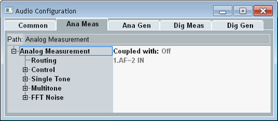

Audio Measurement Settings
To access the analog and digital measurement settings, select the "Analog Meas" tab or the "Digital Meas" tab and press the "Config" hotkey. The tabs are only displayed if the currently active scenario involves internal audio measurements and generators.
The following sections describe the "Ana Meas" and "Dig Meas" tabs of the configuration dialog box.

Configuration dialog box for measurements and generators
Contents